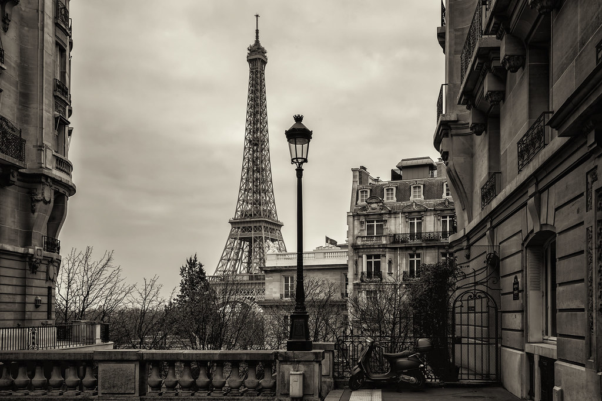

Cookies are required to use this website. Please enable cookies in your browser settings.
Top 3 Recommended Places to Go on Vacation
>
Bali, Indonesia - Bali is a true tropical paradise known for its breathtaking beaches, vibrant culture, and lush landscapes. Visitors can explore ancient temples, enjoy the rich Balinese arts and crafts, or simply relax on the white sandy beaches. The island is also famous for its surf spots, scenic rice terraces, and world-class resorts. Whether you're seeking adventure or tranquility, Bali offers an unforgettable experience.

Paris, France - Paris, the capital city of France, is a global center for art, fashion, and culture. Known as the "City of Love," Paris is home to iconic landmarks such as the Eiffel Tower, the Louvre Museum, and Notre-Dame Cathedral. Stroll along the charming streets of Montmartre, dine in world-renowned restaurants, or cruise along the Seine River. Paris's blend of historical significance and modern allure makes it a must-visit destination.
Maui, Hawaii - Maui, often referred to as the "Valley Isle," is celebrated for its diverse landscapes, from volcanic craters to lush rainforests. Visitors can drive the famous Road to Hana, hike in Haleakalā National Park, or relax on the pristine beaches of Ka'anapali and Wailea. Maui's unique blend of adventure and relaxation, coupled with its rich Hawaiian culture, makes it an ideal destination for nature lovers and beachgoers alike.
 Bali, Indonesia
Bali, Indonesia Maui, Hawaii
Maui, Hawaii